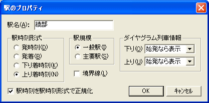

駅のプロパティを設定できます。

[駅名]
駅名を指定してください。省略できません。
[駅時刻形式]
これは、『時刻表ビュー』での、この駅の書式を示します。
| [発時刻] | この駅は『時刻表ビュー』では、発時刻のみを表示します。一般の途中駅では、これを指定してください。 |
| [発着] | この駅は『時刻表ビュー』では、着時刻・発時刻の両方を表示します。長時間停車する列車の多い途中駅（主要駅や待避可能駅）では、これを指定します。 |
| [下り着時刻] | この駅は、下りの『時刻表ビュー』では着時刻のみ表示・上りの『時刻表ビュー』では発時刻のみ表示となります。下り列車の終点・終点に近い途中駅で使います。 |
| [上り着時刻] | この駅は、上りの『時刻表ビュー』では着時刻のみ表示・下りの『時刻表ビュー』では発時刻のみ表示となります。上り列車の終点・終点に近い途中駅で使います。 |
[駅規模]
これは、『ダイヤグラムビュー』での、この駅の書式を指定します。
| [一般駅] | この駅は、『ダイヤグラムビュー』では細い横線であらわします。 |
| [主要駅] | この駅は、『ダイヤグラムビュー』では太い横線であらわします。 |
[境界線]
チェックをONにすると、下りの『時刻表ビュー』では、この駅の下に横罫線がつきます。上りの『時刻表ビュー』では、この駅の上に横罫線がつきます。
参照：『2.1. 基本的な使い方』の『2.1.2.3. 駅の入力』
参照：『2.3.15.[駅時刻形式]変更時の、列車の駅時刻変更』
[ダイヤグラム列車情報][下り]
ダイヤグラム上で、この駅の位置に下り列車の列車情報(列車番号・列車名・号数)を表示する方法を指定することができます。以下からの選択です。
| [始発なら表示] | この駅が始発駅である場合は、列車情報を表示します。既定の設定です。 |
| [常に表示] | この駅を発車するすべての列車に、列車情報を表示します。 |
| [表示しない] | この駅の位置には、列車情報を表示しません。 この駅が始発駅である場合、列車情報表示を次の駅に表示します。 |
[ダイヤグラム列車情報][上り]
ダイヤグラム上で、この駅の位置に上り列車の列車情報(列車番号・列車名・号数)を表示する方法を指定することができます。選択肢は、[ダイヤグラム列車情報][下り] と同様です。
チェックをONにした状態で[OK]を押すと、すべてのダイヤのすべての列車の駅時刻を、駅時刻形式で正規化します。
◎駅時刻を駅時刻形式で正規化 の詳細
着時刻・発時刻のどちらかしか入力していない駅の時刻が、時刻表ビューになるべく表示されるように変換を行います。
１．駅時刻形式を[発時刻]に変更した場合
「着時刻=あり、発時刻=なし」の駅時刻を、「着時刻=なし、発時刻=あり(それまでの着時刻)」に変更します。
２．駅時刻形式を[下り着時刻]に変更した場合
下り列車の「着時刻=なし、発時刻=あり」の駅時刻を、「着時刻=あり(それまでの発時刻)、発時刻=なし」に変更します。
３．駅時刻形式を[上り着時刻]に変更した場合
上り列車の「着時刻=なし、発時刻=あり」の駅時刻を、「着時刻=あり(それまでの発時刻)、発時刻=なし」に変更します。